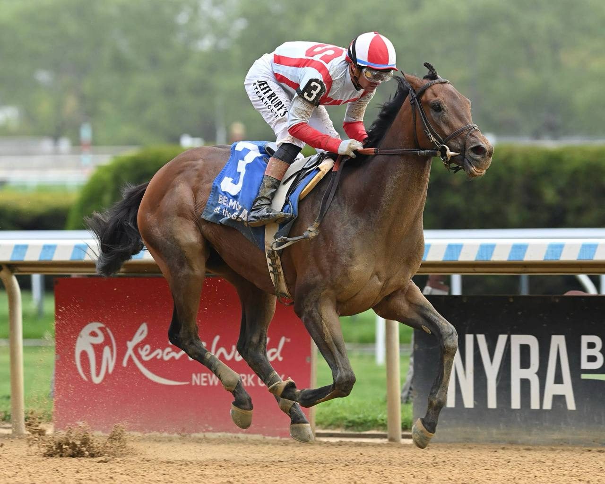

Growth Equity emerge como tapado del Belmont Stakes tras dominar el Peter Pan
Growth Equity se ha colado de pleno en la conversación del Belmont Stakes 2026 tras su contundente actuación en el Peter Pan Stakes de Saratoga del pasado 9 de mayo, prueba clave entre las cubiertas de cara a la última joya de la Triple Corona estadounidense. El producto entrenado en la costa este encarriló la…

Growth Equity se ha colado de pleno en la conversación del Belmont Stakes 2026 tras su contundente actuación en el Peter Pan Stakes de Saratoga del pasado 9 de mayo, prueba clave entre las cubiertas de cara a la última joya de la Triple Corona estadounidense. El producto entrenado en la costa este encarriló la prueba presionando un ritmo cómodo y se impuso por dos cuerpos a Talk to Me Jimmy en una victoria que la afición americana ha leído de inmediato como un aviso serio para la prueba grande.
El Belmont Stakes se correrá por tercer año consecutivo en Saratoga Race Course el próximo 6 de junio, mientras avanzan las obras del histórico Belmont Park. La distancia sigue ajustada a una milla y cuarto (en lugar de la milla y media tradicional), una circunstancia que cambia el perfil del recorrido y abre puerta a perfiles distintos al clásico stayer puro de la prueba neoyorquina.
Por encima de todos sigue figurando Renegade, segundo del Kentucky Derby, que parte como gran favorito en las primeras cuotas. El propio ganador del Derby, Golden Tempo, está confirmado para volver. Pero el grupo de los aspirantes nuevos —Growth Equity, junto con el ganador del Withers Talk to Me Jimmy, el segundo del Toyota Blue Grass Ottinho y el reciente vencedor de un maiden, Powershift— promete dar un giro al planteamiento de la carrera.
Growth Equity es un perfil que encaja especialmente bien con el nuevo escenario de Saratoga: hijo de un padre con vocación de mediodistancia, se mostró cómodo presionando el ritmo y soltándose en línea recta con una monta plácida. Esa capacidad para no quedar atrapado en un trazado de una milla y cuarto puede ser decisiva ante un campo donde abundan los stalkers procedentes de las pruebas previas.
— Redacción de Galope al Día